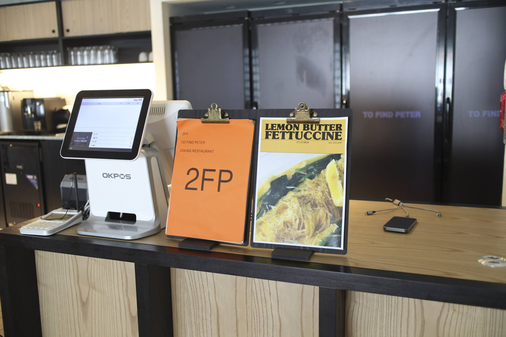
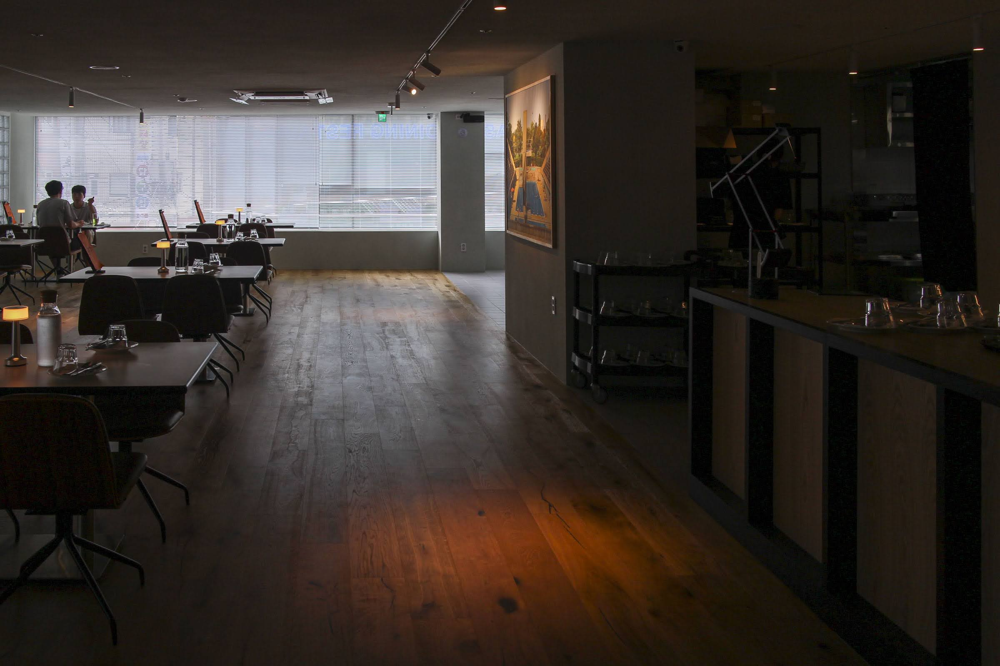
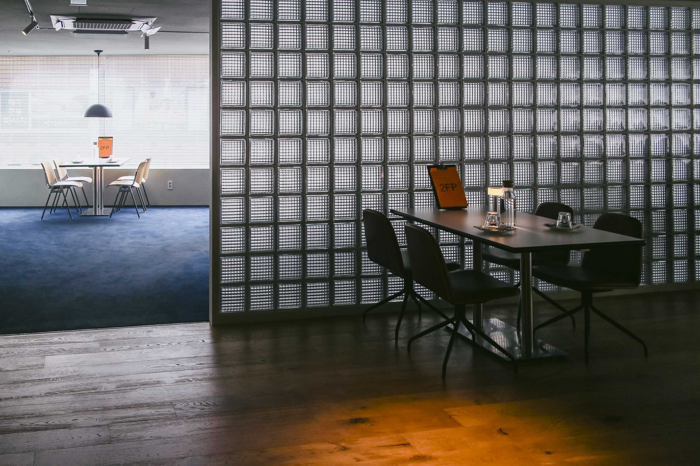
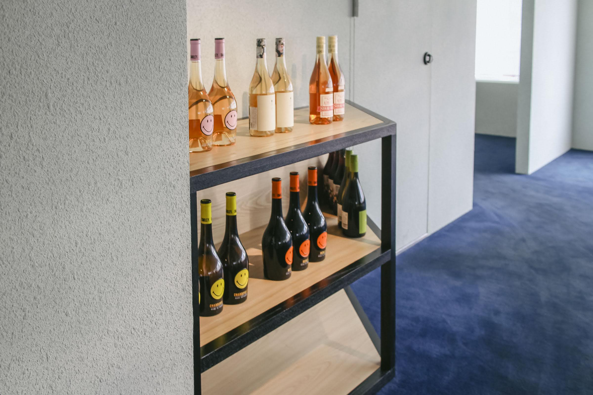
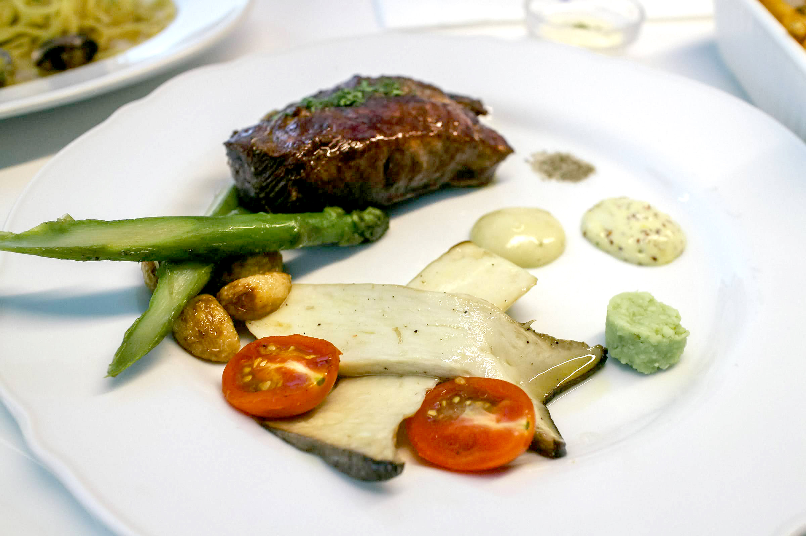
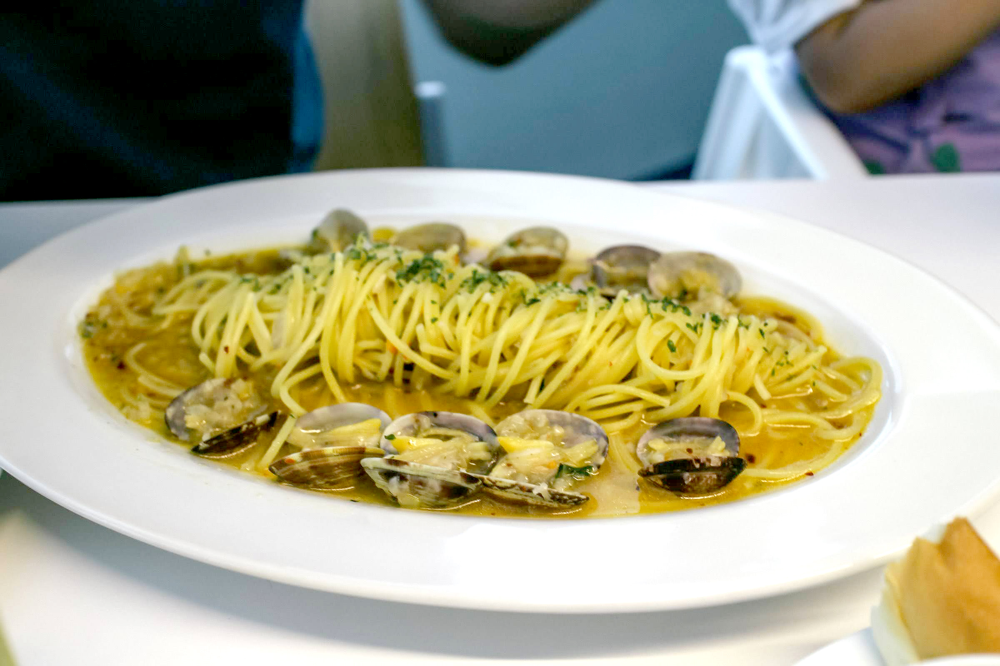
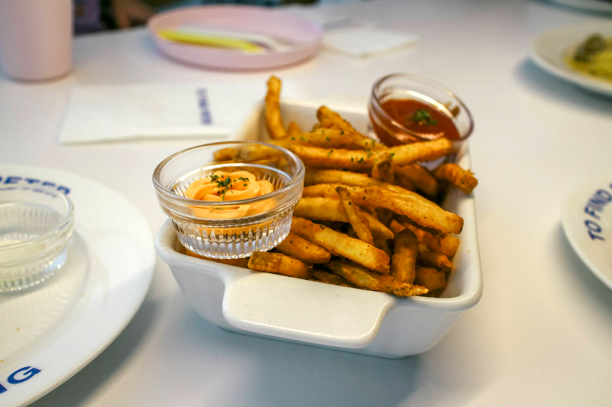
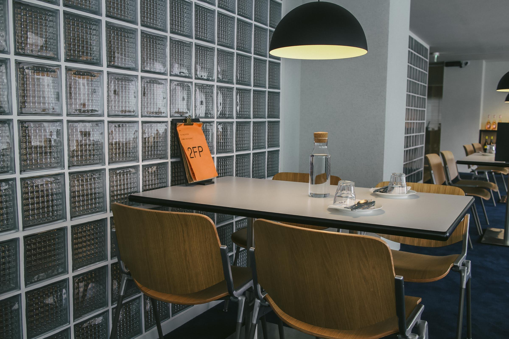
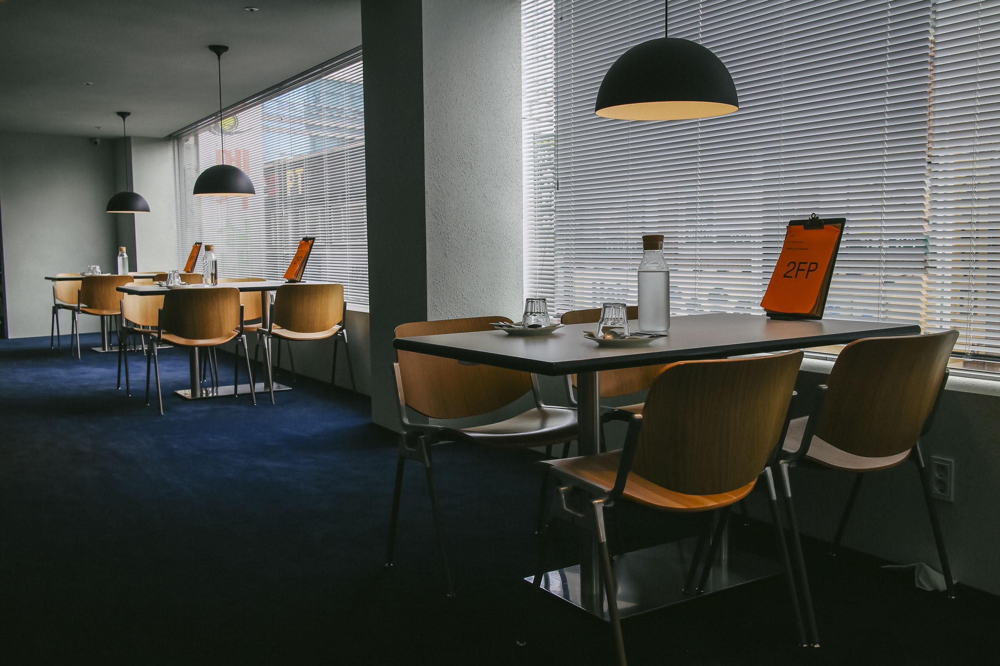
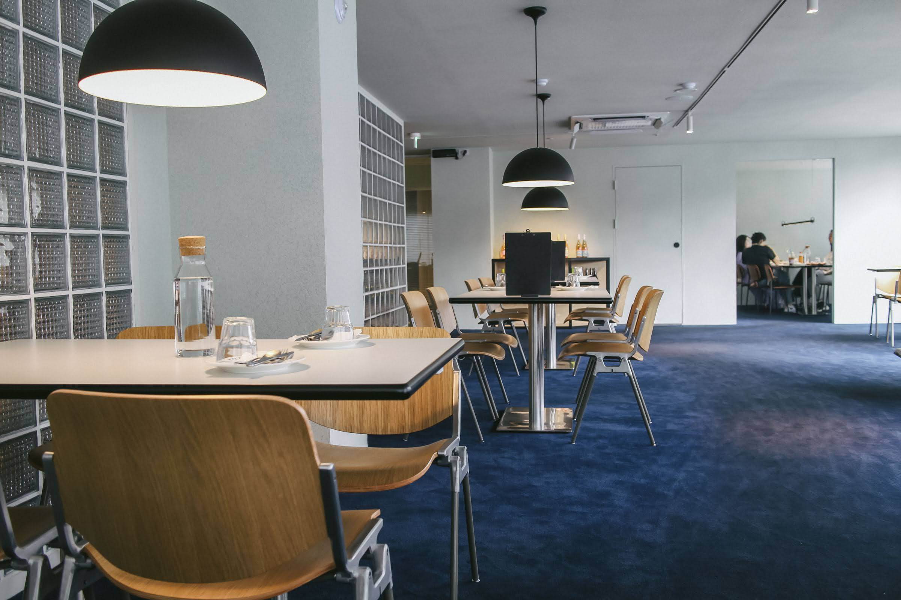

#잠실새내역맛집 #2FP #투파인드피터_잠실점
우연히 알게된 2FP 투 파인드 피터에 오랫동안 만나지 못했던 아는 동생 가족들과 만나 방문했습니다.
지도에서 투파인드피터 검색해보시면 많은 지점이 나옵니다. (수도권 한정)
제가 방문한 지점은 잠실점입니다.
2FP 투 파인드 피터 잠실점 위치
지도는 제공되지 않습니다.
2FP 투 파인드 피터 내부 모습
   
캐주얼 다이닝을 추구하는 2FP 의 식기와 커트러리


흰색과 진한 파랑의 색상이 브랜드 색상으로 눈에 띕니다. 바닥도 같은 색상으로 깔아놨네요.
2FP 투 파인드 피터 메뉴



채끝 스테이크와 봉골레 파스타, 전복내장 크림 리조또, 사이드로 감자 튀김을 주문했습니다. 요즘 파스타 가격이 보통 2만원이 넘어가는데 2FP 는 아직 1만원대, 스테이크는 2만원대였습니다. 물론 맛도 있었습니다. 바삭한 케이준 스타일의 감자튀김은 냉방병으로 입맛이 없던 저도 계속 손이 갈정도로 맛있었어요. 사이드로 같이 주문하는걸 추천드립니다. 리조또는 사진 찍긴 했는데 망한 사진 대회에 출전할만한 사진이라 못올렸습니다. ㅠㅠ



2FP 투 파인드 피터 방문 간단 후기
캐주얼하면서도 잘 갖춘 분위기와 고인플레이션에서도 적당한 가격과 맛의 캐주얼 다이닝 2FP 투 파인드 피터 추천드립니다.